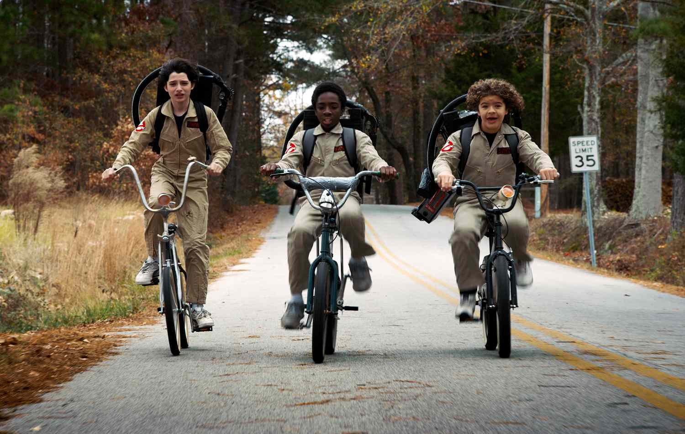

BeEcological.com
Login Sign up Contact us
" The Earth and the Soil are living entities. It is my wish and my blessing that we act as one humanity to turn the situation around from the brink of disaster. Save Soil. Let us make it happen" -Sadhguru
Persuading people to change something about their lifestyle is not easy, and it works differently for everyone. Remember that this is a change for your friend and changes take time. So the process to get them onboard might get frustrating sometimes, but don’t let that dishearten you. Because while trying to get your friends on board to love the planet is not supposed to be an easy job, you’re still trying your best. And with a little patience, it’s possible and also extremely rewarding. Keep your mind open, be patient with them and also be positive. Convincing people to adopt an eco-friendly lifestyle involves building connections, understanding their perspectives, and providing compelling reasons for making sustainable choices. Here are some techniques to bond with people and convince them to embrace ecological living:
